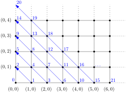
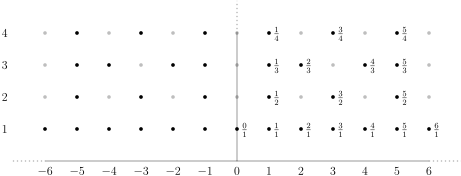
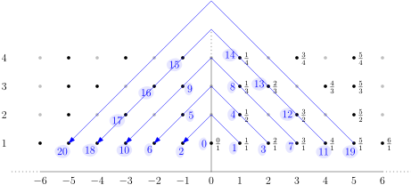

3.2 Beispiele abzählbar unendlicher Mengen./course1/wly/03/02-examples-of-equipotent-sets.wly:2:11
3.2 Beispiele abzählbar unendlicher Mengen./course1/wly/03/02-examples-of-equipotent-sets.wly:2:11
Noch bevor wir im letzten Teilkapitel den Begriff der./course1/wly/03/02-examples-of-equipotent-sets.wly:4:5 Gleichmächtigkeit definiert haben, haben wir zwei Beispiele./course1/wly/03/02-examples-of-equipotent-sets.wly:5:5 gesehen: ./course1/wly/03/02-examples-of-equipotent-sets.wly:6:5$\N^+ \approx \N \approx \Z$./course1/wly/03/02-examples-of-equipotent-sets.wly:6:14../course1/wly/03/02-examples-of-equipotent-sets.wly:6:42 Alle Mengen sind./course1/wly/03/02-examples-of-equipotent-sets.wly:6:42 gleichmächtig. In diesem Teilkapitel werden wir./course1/wly/03/02-examples-of-equipotent-sets.wly:7:5 unintuitivere Beispiele sehen: ./course1/wly/03/02-examples-of-equipotent-sets.wly:8:5$\N \approx \Q$./course1/wly/03/02-examples-of-equipotent-sets.wly:8:36../course1/wly/03/02-examples-of-equipotent-sets.wly:8:51 Dies./course1/wly/03/02-examples-of-equipotent-sets.wly:8:51 scheint absurd! ./course1/wly/03/02-examples-of-equipotent-sets.wly:9:5$\N$./course1/wly/03/02-examples-of-equipotent-sets.wly:9:21 und ./course1/wly/03/02-examples-of-equipotent-sets.wly:9:25$\Z$./course1/wly/03/02-examples-of-equipotent-sets.wly:9:30 liegen ja schön der Reihe./course1/wly/03/02-examples-of-equipotent-sets.wly:9:34 nach sortiert, sodass sich eine Bijektion durch eine./course1/wly/03/02-examples-of-equipotent-sets.wly:10:5 einfach Umordnung erreichen ließ. Die Elemente der Menge./course1/wly/03/02-examples-of-equipotent-sets.wly:11:5 ./course1/wly/03/02-examples-of-equipotent-sets.wly:12:5$\Q$./course1/wly/03/02-examples-of-equipotent-sets.wly:12:5 aber liegen ja nicht säuberlich getrennt, sondern./course1/wly/03/02-examples-of-equipotent-sets.wly:12:9 ganz dicht nebeneinander. Aber eins nach dem anderen../course1/wly/03/02-examples-of-equipotent-sets.wly:13:5
Theorem 3.2.1./course1/wly/03/02-examples-of-equipotent-sets.wly:15:5 ./course1/wly/03/02-examples-of-equipotent-sets.wly:15:5 Die Mengen ./course1/wly/03/02-examples-of-equipotent-sets.wly:17:9$\N$./course1/wly/03/02-examples-of-equipotent-sets.wly:17:20 und ./course1/wly/03/02-examples-of-equipotent-sets.wly:17:24$\N^2$./course1/wly/03/02-examples-of-equipotent-sets.wly:17:29 sind gleichmächtig. Mit ./course1/wly/03/02-examples-of-equipotent-sets.wly:17:35$\N^2$./course1/wly/03/02-examples-of-equipotent-sets.wly:17:60 ./course1/wly/03/02-examples-of-equipotent-sets.wly:17:66 (oder auch ./course1/wly/03/02-examples-of-equipotent-sets.wly:18:9$\N \times \N$./course1/wly/03/02-examples-of-equipotent-sets.wly:18:20)./course1/wly/03/02-examples-of-equipotent-sets.wly:18:34 bezeichnen wir hier das./course1/wly/03/02-examples-of-equipotent-sets.wly:18:34 cartesische Produkt von ./course1/wly/03/02-examples-of-equipotent-sets.wly:19:9$\N$./course1/wly/03/02-examples-of-equipotent-sets.wly:19:33 mit sich selbst: die Menge./course1/wly/03/02-examples-of-equipotent-sets.wly:19:37 aller ./course1/wly/03/02-examples-of-equipotent-sets.wly:20:9Paare./course1/wly/03/02-examples-of-equipotent-sets.wly:20:16 ./course1/wly/03/02-examples-of-equipotent-sets.wly:20:22$(a,b)$./course1/wly/03/02-examples-of-equipotent-sets.wly:20:23 von natürlichen Zahlen../course1/wly/03/02-examples-of-equipotent-sets.wly:20:30
Beweis Wir skizzieren eine Bijektion./course1/wly/03/02-examples-of-equipotent-sets.wly:35:9 ./course1/wly/03/02-examples-of-equipotent-sets.wly:36:9$f : \N \times \N \rightarrow \N$./course1/wly/03/02-examples-of-equipotent-sets.wly:36:9,./course1/wly/03/02-examples-of-equipotent-sets.wly:36:42 indem wir für jeden./course1/wly/03/02-examples-of-equipotent-sets.wly:36:42 Punkt ./course1/wly/03/02-examples-of-equipotent-sets.wly:37:9$(x,y) \in \N \times \N$./course1/wly/03/02-examples-of-equipotent-sets.wly:37:15 angeben, auf welche./course1/wly/03/02-examples-of-equipotent-sets.wly:37:39 natürliche Zahl er abgebildet werden soll:./course1/wly/03/02-examples-of-equipotent-sets.wly:38:9

course1/public/img/infinite-sets/N-times-N-to-N.svgWir zerlegen ./course1/wly/03/02-examples-of-equipotent-sets.wly:44:9$\N \times \N$./course1/wly/03/02-examples-of-equipotent-sets.wly:44:22 also in fallende Diagonale und./course1/wly/03/02-examples-of-equipotent-sets.wly:44:36 gehen jede Diagonale von rechts unten nach links oben./course1/wly/03/02-examples-of-equipotent-sets.wly:45:9 durch. Dadurch können wir die zweidimensionale Gestalt von./course1/wly/03/02-examples-of-equipotent-sets.wly:46:9 ./course1/wly/03/02-examples-of-equipotent-sets.wly:47:9$\N \times \N$./course1/wly/03/02-examples-of-equipotent-sets.wly:47:9 "aufdröseln" und dem eindimensionalen ./course1/wly/03/02-examples-of-equipotent-sets.wly:47:23$\N$./course1/wly/03/02-examples-of-equipotent-sets.wly:47:62 ./course1/wly/03/02-examples-of-equipotent-sets.wly:47:66 zuordnen../course1/wly/03/02-examples-of-equipotent-sets.wly:48:9A\(\square\)
Übungsaufgabe 3.2.1./course1/wly/03/02-examples-of-equipotent-sets.wly:50:5 ./course1/wly/03/02-examples-of-equipotent-sets.wly:50:5 Finden Sie eine explizite Formel für die Funktion./course1/wly/03/02-examples-of-equipotent-sets.wly:51:9 ./course1/wly/03/02-examples-of-equipotent-sets.wly:52:9$f : \N \times \N$./course1/wly/03/02-examples-of-equipotent-sets.wly:52:9 aus dem obigen Theorem. Achten Sie erst./course1/wly/03/02-examples-of-equipotent-sets.wly:52:27 einmal auf die Werte von ./course1/wly/03/02-examples-of-equipotent-sets.wly:53:9$f(x,0)$./course1/wly/03/02-examples-of-equipotent-sets.wly:53:34:./course1/wly/03/02-examples-of-equipotent-sets.wly:53:42 ./course1/wly/03/02-examples-of-equipotent-sets.wly:53:42$f(3,0) = 6$./course1/wly/03/02-examples-of-equipotent-sets.wly:53:44 und./course1/wly/03/02-examples-of-equipotent-sets.wly:53:56 ./course1/wly/03/02-examples-of-equipotent-sets.wly:54:9$f(4,0) = 10$./course1/wly/03/02-examples-of-equipotent-sets.wly:54:9 beispielsweise. Erkennen Sie die blauen./course1/wly/03/02-examples-of-equipotent-sets.wly:54:22 Zahlen auf der ./course1/wly/03/02-examples-of-equipotent-sets.wly:55:9$x$./course1/wly/03/02-examples-of-equipotent-sets.wly:55:24-Achse?./course1/wly/03/02-examples-of-equipotent-sets.wly:55:27 Haben Sie eine Formel für sie?./course1/wly/03/02-examples-of-equipotent-sets.wly:55:27 Finden Sie eine. Dann erweitern Sie die Formel, so dass sie./course1/wly/03/02-examples-of-equipotent-sets.wly:56:9 für alle Werte von ./course1/wly/03/02-examples-of-equipotent-sets.wly:57:9$(x,y) \in \N \times \N$./course1/wly/03/02-examples-of-equipotent-sets.wly:57:28 funktioniert!./course1/wly/03/02-examples-of-equipotent-sets.wly:57:52
Übungsaufgabe 3.2.2./course1/wly/03/02-examples-of-equipotent-sets.wly:59:5 ./course1/wly/03/02-examples-of-equipotent-sets.wly:59:5 Zeigen Sie ./course1/wly/03/02-examples-of-equipotent-sets.wly:60:9$\Z \times \Z \approx \Z$./course1/wly/03/02-examples-of-equipotent-sets.wly:60:20,./course1/wly/03/02-examples-of-equipotent-sets.wly:60:45 indem Sie eine./course1/wly/03/02-examples-of-equipotent-sets.wly:60:45 ähnliche Aufdröselung finden, jetzt aber mit negativen./course1/wly/03/02-examples-of-equipotent-sets.wly:61:9 Zahlen../course1/wly/03/02-examples-of-equipotent-sets.wly:62:9
Übungsaufgabe 3.2.3./course1/wly/03/02-examples-of-equipotent-sets.wly:64:5 ./course1/wly/03/02-examples-of-equipotent-sets.wly:64:5 Zeigen Sie ganz allgemein: wenn ./course1/wly/03/02-examples-of-equipotent-sets.wly:66:9$A \approx A'$./course1/wly/03/02-examples-of-equipotent-sets.wly:66:41 und./course1/wly/03/02-examples-of-equipotent-sets.wly:66:55 ./course1/wly/03/02-examples-of-equipotent-sets.wly:67:9$B \approx B'$./course1/wly/03/02-examples-of-equipotent-sets.wly:67:9,./course1/wly/03/02-examples-of-equipotent-sets.wly:67:23 dann gilt auch./course1/wly/03/02-examples-of-equipotent-sets.wly:67:23 ./course1/wly/03/02-examples-of-equipotent-sets.wly:68:9$A \times B \approx A' \times B'$./course1/wly/03/02-examples-of-equipotent-sets.wly:68:9../course1/wly/03/02-examples-of-equipotent-sets.wly:68:42
Übungsaufgabe 3.2.4./course1/wly/03/02-examples-of-equipotent-sets.wly:70:5 ./course1/wly/03/02-examples-of-equipotent-sets.wly:70:5 Zeigen Sie, dass ./course1/wly/03/02-examples-of-equipotent-sets.wly:71:9$\N \times \N \times \N \approx \N$./course1/wly/03/02-examples-of-equipotent-sets.wly:71:26 gilt./course1/wly/03/02-examples-of-equipotent-sets.wly:71:61 und ganz allgemein: ./course1/wly/03/02-examples-of-equipotent-sets.wly:72:9$\N^k \approx \N$./course1/wly/03/02-examples-of-equipotent-sets.wly:72:29../course1/wly/03/02-examples-of-equipotent-sets.wly:72:46
Übungsaufgabe 3.2.5./course1/wly/03/02-examples-of-equipotent-sets.wly:74:5 ./course1/wly/03/02-examples-of-equipotent-sets.wly:74:5 Sei ./course1/wly/03/02-examples-of-equipotent-sets.wly:75:9$\N^*$./course1/wly/03/02-examples-of-equipotent-sets.wly:75:13 die Menge aller endlichen Folgen natürlicher./course1/wly/03/02-examples-of-equipotent-sets.wly:75:19 Zahlen, also./course1/wly/03/02-examples-of-equipotent-sets.wly:76:9
wobei ./course1/wly/03/02-examples-of-equipotent-sets.wly:83:9$\epsilon$./course1/wly/03/02-examples-of-equipotent-sets.wly:83:15 die leere Folge (mit 0 Gliedern)./course1/wly/03/02-examples-of-equipotent-sets.wly:83:25 bezeichnet. Zeigen Sie ./course1/wly/03/02-examples-of-equipotent-sets.wly:84:9$\N^* \approx \N$./course1/wly/03/02-examples-of-equipotent-sets.wly:84:32../course1/wly/03/02-examples-of-equipotent-sets.wly:84:49
Ich will Sie nun davon überzeugen, dass ./course1/wly/03/02-examples-of-equipotent-sets.wly:89:5$\Q \approx \N$./course1/wly/03/02-examples-of-equipotent-sets.wly:89:45 ./course1/wly/03/02-examples-of-equipotent-sets.wly:89:60 ist, dass es also "gleich viele rationale wie natürliche./course1/wly/03/02-examples-of-equipotent-sets.wly:90:5 Zahlen" gibt. Ich beginne mit etwas Einfacherem:./course1/wly/03/02-examples-of-equipotent-sets.wly:91:5
Beobachtung 3.2.2./course1/wly/03/02-examples-of-equipotent-sets.wly:93:5 ./course1/wly/03/02-examples-of-equipotent-sets.wly:93:5 Es gibt eine injektive Funktion ./course1/wly/03/02-examples-of-equipotent-sets.wly:94:9$f : \Q \rightarrow \N$./course1/wly/03/02-examples-of-equipotent-sets.wly:94:41../course1/wly/03/02-examples-of-equipotent-sets.wly:94:64
Beweis Falls Sie es vergessen haben: eine Funktion./course1/wly/03/02-examples-of-equipotent-sets.wly:97:9 ./course1/wly/03/02-examples-of-equipotent-sets.wly:98:9$f: A \rightarrow B$./course1/wly/03/02-examples-of-equipotent-sets.wly:98:9 heißt injektiv, wenn für alle./course1/wly/03/02-examples-of-equipotent-sets.wly:98:29 verschiedenen ./course1/wly/03/02-examples-of-equipotent-sets.wly:99:9$a, a' \in A$./course1/wly/03/02-examples-of-equipotent-sets.wly:99:23 auch ./course1/wly/03/02-examples-of-equipotent-sets.wly:99:36$f(a) \ne f(a')$./course1/wly/03/02-examples-of-equipotent-sets.wly:99:42 gilt../course1/wly/03/02-examples-of-equipotent-sets.wly:99:58 Wenn ./course1/wly/03/02-examples-of-equipotent-sets.wly:100:9$f$./course1/wly/03/02-examples-of-equipotent-sets.wly:100:14 also "kollisionsfrei" ist. Sei ./course1/wly/03/02-examples-of-equipotent-sets.wly:100:17$q \in \Q$./course1/wly/03/02-examples-of-equipotent-sets.wly:100:49 eine./course1/wly/03/02-examples-of-equipotent-sets.wly:100:59 rationale Zahl. Wir können ./course1/wly/03/02-examples-of-equipotent-sets.wly:101:9$q$./course1/wly/03/02-examples-of-equipotent-sets.wly:101:36 als gekürzten Bruch./course1/wly/03/02-examples-of-equipotent-sets.wly:101:39 schreiben, also./course1/wly/03/02-examples-of-equipotent-sets.wly:102:9
mit ./course1/wly/03/02-examples-of-equipotent-sets.wly:108:9$a \in \Z$./course1/wly/03/02-examples-of-equipotent-sets.wly:108:13 und ./course1/wly/03/02-examples-of-equipotent-sets.wly:108:23$b \in \N^+$./course1/wly/03/02-examples-of-equipotent-sets.wly:108:28 und ./course1/wly/03/02-examples-of-equipotent-sets.wly:108:40$\gcd(a,b) = 1$./course1/wly/03/02-examples-of-equipotent-sets.wly:108:45../course1/wly/03/02-examples-of-equipotent-sets.wly:108:60 Mit./course1/wly/03/02-examples-of-equipotent-sets.wly:108:60 ./course1/wly/03/02-examples-of-equipotent-sets.wly:109:9$\gcd(a,b)$./course1/wly/03/02-examples-of-equipotent-sets.wly:109:9 bezeichnen wir den größten gemeinsamen Teiler./course1/wly/03/02-examples-of-equipotent-sets.wly:109:20 ./course1/wly/03/02-examples-of-equipotent-sets.wly:110:9(./course1/wly/03/02-examples-of-equipotent-sets.wly:110:9greatest common divisor./course1/wly/03/02-examples-of-equipotent-sets.wly:110:11)./course1/wly/03/02-examples-of-equipotent-sets.wly:110:35 von ./course1/wly/03/02-examples-of-equipotent-sets.wly:110:35$a$./course1/wly/03/02-examples-of-equipotent-sets.wly:110:41 und ./course1/wly/03/02-examples-of-equipotent-sets.wly:110:44$b$./course1/wly/03/02-examples-of-equipotent-sets.wly:110:49../course1/wly/03/02-examples-of-equipotent-sets.wly:110:52 Wir./course1/wly/03/02-examples-of-equipotent-sets.wly:110:52 definieren nun also ./course1/wly/03/02-examples-of-equipotent-sets.wly:111:9$f_1(q) := (a,b) \in \Z \times \N$./course1/wly/03/02-examples-of-equipotent-sets.wly:111:29../course1/wly/03/02-examples-of-equipotent-sets.wly:111:63 ./course1/wly/03/02-examples-of-equipotent-sets.wly:111:63 Dies ist injektiv: zwei verschiedene rationale Zahlen ./course1/wly/03/02-examples-of-equipotent-sets.wly:112:9$q$./course1/wly/03/02-examples-of-equipotent-sets.wly:112:63 ./course1/wly/03/02-examples-of-equipotent-sets.wly:112:66 und ./course1/wly/03/02-examples-of-equipotent-sets.wly:113:9$q'$./course1/wly/03/02-examples-of-equipotent-sets.wly:113:13 haben verschiedene Darstellung als gekürzter./course1/wly/03/02-examples-of-equipotent-sets.wly:113:17 Bruch, und somit gilt auch ./course1/wly/03/02-examples-of-equipotent-sets.wly:114:9$f_1(q) \ne f_1(q')$./course1/wly/03/02-examples-of-equipotent-sets.wly:114:36../course1/wly/03/02-examples-of-equipotent-sets.wly:114:56 Wir haben./course1/wly/03/02-examples-of-equipotent-sets.wly:114:56 nun also eine Injektion./course1/wly/03/02-examples-of-equipotent-sets.wly:115:9 ./course1/wly/03/02-examples-of-equipotent-sets.wly:116:9$f_1 : \Q \rightarrow \Z \times \N$./course1/wly/03/02-examples-of-equipotent-sets.wly:116:9../course1/wly/03/02-examples-of-equipotent-sets.wly:116:44 Mit ./course1/wly/03/02-examples-of-equipotent-sets.wly:116:44Übungsaufgabe 3.2.3 und ./course1/wly/03/02-examples-of-equipotent-sets.wly:117:9Theorem 3.2.1 ./course1/wly/03/02-examples-of-equipotent-sets.wly:117:9 gilt ./course1/wly/03/02-examples-of-equipotent-sets.wly:118:9$\Z \times \N \approx \N \times \N \approx \N$./course1/wly/03/02-examples-of-equipotent-sets.wly:118:14,./course1/wly/03/02-examples-of-equipotent-sets.wly:118:60 und./course1/wly/03/02-examples-of-equipotent-sets.wly:118:60 somit gibt es eine Bijektion./course1/wly/03/02-examples-of-equipotent-sets.wly:119:9 ./course1/wly/03/02-examples-of-equipotent-sets.wly:120:9$f_2 : \Z \times \N \rightarrow \N$./course1/wly/03/02-examples-of-equipotent-sets.wly:120:9../course1/wly/03/02-examples-of-equipotent-sets.wly:120:44 Die Verknüpfung./course1/wly/03/02-examples-of-equipotent-sets.wly:120:44 ./course1/wly/03/02-examples-of-equipotent-sets.wly:121:9$f := f_2 \circ f_1 : \Q \rightarrow \N$./course1/wly/03/02-examples-of-equipotent-sets.wly:121:9 ist nun die./course1/wly/03/02-examples-of-equipotent-sets.wly:121:49 gewünschte injektive Funktion ./course1/wly/03/02-examples-of-equipotent-sets.wly:122:9$f$./course1/wly/03/02-examples-of-equipotent-sets.wly:122:39 von ./course1/wly/03/02-examples-of-equipotent-sets.wly:122:42\(\$Q\)./course1/wly/03/02-examples-of-equipotent-sets.wly:122:47 nach ./course1/wly/03/02-examples-of-equipotent-sets.wly:122:54$\N$./course1/wly/03/02-examples-of-equipotent-sets.wly:122:60../course1/wly/03/02-examples-of-equipotent-sets.wly:122:64A\(\square\)
Dies ist leider keine Bijektion: das Paar ./course1/wly/03/02-examples-of-equipotent-sets.wly:124:5$(6,9)$./course1/wly/03/02-examples-of-equipotent-sets.wly:124:47 ./course1/wly/03/02-examples-of-equipotent-sets.wly:124:54 beispielsweise wird nie vorkommen, weil ./course1/wly/03/02-examples-of-equipotent-sets.wly:125:5$\frac{6}{9}$./course1/wly/03/02-examples-of-equipotent-sets.wly:125:45 ./course1/wly/03/02-examples-of-equipotent-sets.wly:125:58 nicht gekürzt ist../course1/wly/03/02-examples-of-equipotent-sets.wly:126:5
Beobachtung 3.2.3./course1/wly/03/02-examples-of-equipotent-sets.wly:128:5 ./course1/wly/03/02-examples-of-equipotent-sets.wly:128:5 Es gibt eine injektive Funktion ./course1/wly/03/02-examples-of-equipotent-sets.wly:129:9$g: \N \rightarrow \Q$./course1/wly/03/02-examples-of-equipotent-sets.wly:129:41../course1/wly/03/02-examples-of-equipotent-sets.wly:129:63
Beweis Dies ist ganz einach: da ./course1/wly/03/02-examples-of-equipotent-sets.wly:132:9$\N \subseteq \Q$./course1/wly/03/02-examples-of-equipotent-sets.wly:132:34 gilt, können./course1/wly/03/02-examples-of-equipotent-sets.wly:132:51 wir jedes ./course1/wly/03/02-examples-of-equipotent-sets.wly:133:9$n$./course1/wly/03/02-examples-of-equipotent-sets.wly:133:19 einfach bei sich belassen. Die Funktion./course1/wly/03/02-examples-of-equipotent-sets.wly:133:22
ist die gewünschte Injektion. Man nennt so eine Funktion./course1/wly/03/02-examples-of-equipotent-sets.wly:139:9 auch die ./course1/wly/03/02-examples-of-equipotent-sets.wly:140:9Einbettung./course1/wly/03/02-examples-of-equipotent-sets.wly:140:19 von ./course1/wly/03/02-examples-of-equipotent-sets.wly:140:30$\N$./course1/wly/03/02-examples-of-equipotent-sets.wly:140:35 in ./course1/wly/03/02-examples-of-equipotent-sets.wly:140:39$\Q$./course1/wly/03/02-examples-of-equipotent-sets.wly:140:43../course1/wly/03/02-examples-of-equipotent-sets.wly:140:47A\(\square\)
Wir sind nun also in der sonderbaren Situation, dass wir./course1/wly/03/02-examples-of-equipotent-sets.wly:142:5 eine injektive Funktion ./course1/wly/03/02-examples-of-equipotent-sets.wly:143:5$f : \Q \rightarrow \N$./course1/wly/03/02-examples-of-equipotent-sets.wly:143:29 haben, die./course1/wly/03/02-examples-of-equipotent-sets.wly:143:52 aber nicht alle ./course1/wly/03/02-examples-of-equipotent-sets.wly:144:5$\N$./course1/wly/03/02-examples-of-equipotent-sets.wly:144:21 ausfüllt, also nicht ./course1/wly/03/02-examples-of-equipotent-sets.wly:144:25surjektiv./course1/wly/03/02-examples-of-equipotent-sets.wly:144:48 ist../course1/wly/03/02-examples-of-equipotent-sets.wly:144:58 Gleichzeitig haben wir ./course1/wly/03/02-examples-of-equipotent-sets.wly:145:5$g : \N \rightarrow \Q$./course1/wly/03/02-examples-of-equipotent-sets.wly:145:28,./course1/wly/03/02-examples-of-equipotent-sets.wly:145:51 die./course1/wly/03/02-examples-of-equipotent-sets.wly:145:51 injektiv ist aber auch nicht surjektiv. Bei ./course1/wly/03/02-examples-of-equipotent-sets.wly:146:5$f$./course1/wly/03/02-examples-of-equipotent-sets.wly:146:49 bleiben./course1/wly/03/02-examples-of-equipotent-sets.wly:146:52 also manche natürlichen Zahlen ungenutzt, bei ./course1/wly/03/02-examples-of-equipotent-sets.wly:147:5$g$./course1/wly/03/02-examples-of-equipotent-sets.wly:147:51 bleiben./course1/wly/03/02-examples-of-equipotent-sets.wly:147:54 rationale Zahlen ungenutzt. Können wir ./course1/wly/03/02-examples-of-equipotent-sets.wly:148:5$f$./course1/wly/03/02-examples-of-equipotent-sets.wly:148:44 und ./course1/wly/03/02-examples-of-equipotent-sets.wly:148:47$g$./course1/wly/03/02-examples-of-equipotent-sets.wly:148:52 ./course1/wly/03/02-examples-of-equipotent-sets.wly:148:55 irgendwie kombinieren, um eine bijektive Funktion zu./course1/wly/03/02-examples-of-equipotent-sets.wly:149:5 erschaffen? Die Antwort lautet ./course1/wly/03/02-examples-of-equipotent-sets.wly:150:5ja, das geht immer./course1/wly/03/02-examples-of-equipotent-sets.wly:150:37,./course1/wly/03/02-examples-of-equipotent-sets.wly:150:56 ist./course1/wly/03/02-examples-of-equipotent-sets.wly:150:56 nicht ganz trivial zu beweisen, heißt./course1/wly/03/02-examples-of-equipotent-sets.wly:151:5 ./course1/wly/03/02-examples-of-equipotent-sets.wly:152:5Schröder-Bernstein-Theorem./course1/wly/03/02-examples-of-equipotent-sets.wly:152:6,./course1/wly/03/02-examples-of-equipotent-sets.wly:152:91 und wir werden das im ./course1/wly/03/02-examples-of-equipotent-sets.wly:153:5Teilkapitel ... beweisen. Vorerst behelfen wir uns mit ad-hoc-Methoden../course1/wly/03/02-examples-of-equipotent-sets.wly:157:6
Theorem 3.2.4./course1/wly/03/02-examples-of-equipotent-sets.wly:159:5 ./course1/wly/03/02-examples-of-equipotent-sets.wly:159:5 Es gilt ./course1/wly/03/02-examples-of-equipotent-sets.wly:160:9$\Q \approx \N$./course1/wly/03/02-examples-of-equipotent-sets.wly:160:17../course1/wly/03/02-examples-of-equipotent-sets.wly:160:32
Beweis Wir definieren eine Bijektion ./course1/wly/03/02-examples-of-equipotent-sets.wly:163:9$f: \N \rightarrow \Q$./course1/wly/03/02-examples-of-equipotent-sets.wly:163:39,./course1/wly/03/02-examples-of-equipotent-sets.wly:163:61 ./course1/wly/03/02-examples-of-equipotent-sets.wly:163:61 indem wir die Beweisidee von wiederholen. Wir zeichnen./course1/wly/03/02-examples-of-equipotent-sets.wly:164:9 ./course1/wly/03/02-examples-of-equipotent-sets.wly:165:9$\Z \times \N^+$./course1/wly/03/02-examples-of-equipotent-sets.wly:165:9 schematisch, löschen aber die Paare./course1/wly/03/02-examples-of-equipotent-sets.wly:165:25 ./course1/wly/03/02-examples-of-equipotent-sets.wly:166:9$(a,b)$./course1/wly/03/02-examples-of-equipotent-sets.wly:166:9,./course1/wly/03/02-examples-of-equipotent-sets.wly:166:16 die nicht einem gekürzten Bruch entsprechen../course1/wly/03/02-examples-of-equipotent-sets.wly:166:16

course1/public/img/infinite-sets/Z-times-N-removed.svgDie Punkte sind die Elemente von ./course1/wly/03/02-examples-of-equipotent-sets.wly:172:9$\Z \times \N^+$./course1/wly/03/02-examples-of-equipotent-sets.wly:172:42../course1/wly/03/02-examples-of-equipotent-sets.wly:172:58 Die./course1/wly/03/02-examples-of-equipotent-sets.wly:172:58 schwarzen Punkte sind jene Punkte ./course1/wly/03/02-examples-of-equipotent-sets.wly:173:9$(x,y)$./course1/wly/03/02-examples-of-equipotent-sets.wly:173:43 mit./course1/wly/03/02-examples-of-equipotent-sets.wly:173:50 ./course1/wly/03/02-examples-of-equipotent-sets.wly:174:9$\gcd(x,y)=1$./course1/wly/03/02-examples-of-equipotent-sets.wly:174:9../course1/wly/03/02-examples-of-equipotent-sets.wly:174:22 Diese stehen nun in Bijektion mit den./course1/wly/03/02-examples-of-equipotent-sets.wly:174:22 rationalen Zahlen. Die entsprechenden rationalen Zahlen./course1/wly/03/02-examples-of-equipotent-sets.wly:175:9 habe ich daneben geschrieben - die negativen habe ich aus./course1/wly/03/02-examples-of-equipotent-sets.wly:176:9 Gründen der Übersichtlichkeit weggelassen. Sie befinden./course1/wly/03/02-examples-of-equipotent-sets.wly:177:9 sich spiegelverkehrt auf der linken Seite. Wir müssen nun./course1/wly/03/02-examples-of-equipotent-sets.wly:178:9 eine Aufzählung der schwarzen Punkte finden, also eine./course1/wly/03/02-examples-of-equipotent-sets.wly:179:9 Bijektion von ./course1/wly/03/02-examples-of-equipotent-sets.wly:180:9$\N$./course1/wly/03/02-examples-of-equipotent-sets.wly:180:23 in die Menge der schwarzen Punkte:./course1/wly/03/02-examples-of-equipotent-sets.wly:180:27

course1/public/img/infinite-sets/N-to-Q.svgDas funktioniert natürlich: wir überspringen einfach die./course1/wly/03/02-examples-of-equipotent-sets.wly:186:9 gelöschten Punkte. Wir können allerdings nicht bequem eine./course1/wly/03/02-examples-of-equipotent-sets.wly:187:9 geschlossene Formel dafür angeben. Auf dem "fünften./course1/wly/03/02-examples-of-equipotent-sets.wly:188:9 Hütchen", das von ./course1/wly/03/02-examples-of-equipotent-sets.wly:189:9$\frac{4}{1}$./course1/wly/03/02-examples-of-equipotent-sets.wly:189:27 nach ./course1/wly/03/02-examples-of-equipotent-sets.wly:189:40$\frac{-4}{1}$./course1/wly/03/02-examples-of-equipotent-sets.wly:189:46 läuft,./course1/wly/03/02-examples-of-equipotent-sets.wly:189:60 sind zum Beispiel alle Punkte bis auf ./course1/wly/03/02-examples-of-equipotent-sets.wly:190:9$(0,5)$./course1/wly/03/02-examples-of-equipotent-sets.wly:190:47 schwarz, was./course1/wly/03/02-examples-of-equipotent-sets.wly:190:54 daran liegt, dass ./course1/wly/03/02-examples-of-equipotent-sets.wly:191:9$5$./course1/wly/03/02-examples-of-equipotent-sets.wly:191:27 eine Primzahl ist und somit alle./course1/wly/03/02-examples-of-equipotent-sets.wly:191:30 ./course1/wly/03/02-examples-of-equipotent-sets.wly:192:9$(x,y)$./course1/wly/03/02-examples-of-equipotent-sets.wly:192:9 mit ./course1/wly/03/02-examples-of-equipotent-sets.wly:192:16$x+y = 5$./course1/wly/03/02-examples-of-equipotent-sets.wly:192:21 und ./course1/wly/03/02-examples-of-equipotent-sets.wly:192:30$x, y \geq 1$./course1/wly/03/02-examples-of-equipotent-sets.wly:192:35 teilerfremd sind../course1/wly/03/02-examples-of-equipotent-sets.wly:192:48 Streng genommen müssten wir uns davon überzeugen, dass./course1/wly/03/02-examples-of-equipotent-sets.wly:193:9 unendlich viele schwarze Punkte übrigbleiben. Das ist aber./course1/wly/03/02-examples-of-equipotent-sets.wly:194:9 einfach, weil alle Punkte der Form ./course1/wly/03/02-examples-of-equipotent-sets.wly:195:9$(x,1)$./course1/wly/03/02-examples-of-equipotent-sets.wly:195:44 der Zahl./course1/wly/03/02-examples-of-equipotent-sets.wly:195:51 ./course1/wly/03/02-examples-of-equipotent-sets.wly:196:9$\frac{x}{1}$./course1/wly/03/02-examples-of-equipotent-sets.wly:196:9 entsprechen, und das ist ja ein gekürzter./course1/wly/03/02-examples-of-equipotent-sets.wly:196:22 Bruch../course1/wly/03/02-examples-of-equipotent-sets.wly:197:9A\(\square\)
Erinnern wir uns an ./course1/wly/03/02-examples-of-equipotent-sets.wly:202:5$\{0,1\}^*$./course1/wly/03/02-examples-of-equipotent-sets.wly:202:25,./course1/wly/03/02-examples-of-equipotent-sets.wly:202:36 die Menge aller endlichen./course1/wly/03/02-examples-of-equipotent-sets.wly:202:36 Bitstrings. Die Menge ist ganz klar unendlich, weil sie zum./course1/wly/03/02-examples-of-equipotent-sets.wly:203:5 Beispiel ./course1/wly/03/02-examples-of-equipotent-sets.wly:204:5$1, 11, 111, 1111, \dots$./course1/wly/03/02-examples-of-equipotent-sets.wly:204:14 enthält. Ist sie./course1/wly/03/02-examples-of-equipotent-sets.wly:204:39 ./course1/wly/03/02-examples-of-equipotent-sets.wly:205:5abzählbar./course1/wly/03/02-examples-of-equipotent-sets.wly:205:6 unendlich?./course1/wly/03/02-examples-of-equipotent-sets.wly:205:16
Theorem 3.2.5./course1/wly/03/02-examples-of-equipotent-sets.wly:207:5 ./course1/wly/03/02-examples-of-equipotent-sets.wly:207:5 Es gilt ./course1/wly/03/02-examples-of-equipotent-sets.wly:208:9$\{0,1\}^* \approx \N$./course1/wly/03/02-examples-of-equipotent-sets.wly:208:17../course1/wly/03/02-examples-of-equipotent-sets.wly:208:39
Beweis Hier ist eine Idee: wir interpretieren den Bitstring./course1/wly/03/02-examples-of-equipotent-sets.wly:211:9 ./course1/wly/03/02-examples-of-equipotent-sets.wly:212:9$a_1 a_2 \dots a_n$./course1/wly/03/02-examples-of-equipotent-sets.wly:212:9 als ./course1/wly/03/02-examples-of-equipotent-sets.wly:212:28$n$./course1/wly/03/02-examples-of-equipotent-sets.wly:212:33-stellige./course1/wly/03/02-examples-of-equipotent-sets.wly:212:36 Binärzahl, also./course1/wly/03/02-examples-of-equipotent-sets.wly:212:36
Leider geht das schief, weil ./course1/wly/03/02-examples-of-equipotent-sets.wly:218:9$0$./course1/wly/03/02-examples-of-equipotent-sets.wly:218:38,./course1/wly/03/02-examples-of-equipotent-sets.wly:218:41 ./course1/wly/03/02-examples-of-equipotent-sets.wly:218:41$00$./course1/wly/03/02-examples-of-equipotent-sets.wly:218:43,./course1/wly/03/02-examples-of-equipotent-sets.wly:218:47 ./course1/wly/03/02-examples-of-equipotent-sets.wly:218:47$000$./course1/wly/03/02-examples-of-equipotent-sets.wly:218:49 etc. alle./course1/wly/03/02-examples-of-equipotent-sets.wly:218:54 auf ./course1/wly/03/02-examples-of-equipotent-sets.wly:219:9$0$./course1/wly/03/02-examples-of-equipotent-sets.wly:219:13 abgebildet werden. Ebenso ./course1/wly/03/02-examples-of-equipotent-sets.wly:219:16$1$./course1/wly/03/02-examples-of-equipotent-sets.wly:219:43,./course1/wly/03/02-examples-of-equipotent-sets.wly:219:46 ./course1/wly/03/02-examples-of-equipotent-sets.wly:219:46$01$./course1/wly/03/02-examples-of-equipotent-sets.wly:219:48,./course1/wly/03/02-examples-of-equipotent-sets.wly:219:52 ./course1/wly/03/02-examples-of-equipotent-sets.wly:219:52$001$./course1/wly/03/02-examples-of-equipotent-sets.wly:219:54 und so./course1/wly/03/02-examples-of-equipotent-sets.wly:219:59 weiter. Wir könnten uns behelfen und dem String eine 1./course1/wly/03/02-examples-of-equipotent-sets.wly:220:9 voranstellen, also beispielsweise./course1/wly/03/02-examples-of-equipotent-sets.wly:221:9
Formal also./course1/wly/03/02-examples-of-equipotent-sets.wly:228:9
Eine äquivalente Interpretation: wir sortieren erst einmal./course1/wly/03/02-examples-of-equipotent-sets.wly:235:9 die Bitstrings nach ihrer Länge. Dann gehen wir ./course1/wly/03/02-examples-of-equipotent-sets.wly:236:9$\{0,1\}^n$./course1/wly/03/02-examples-of-equipotent-sets.wly:236:57 ./course1/wly/03/02-examples-of-equipotent-sets.wly:236:68 lexicographisch durch, also von ./course1/wly/03/02-examples-of-equipotent-sets.wly:237:9$00\dots0$./course1/wly/03/02-examples-of-equipotent-sets.wly:237:41 bis ./course1/wly/03/02-examples-of-equipotent-sets.wly:237:51$11\dots$./course1/wly/03/02-examples-of-equipotent-sets.wly:237:56../course1/wly/03/02-examples-of-equipotent-sets.wly:237:65 ./course1/wly/03/02-examples-of-equipotent-sets.wly:237:65 Diese Reihenfolge durchläuft ganz ./course1/wly/03/02-examples-of-equipotent-sets.wly:238:9$\{0,1\}^*$./course1/wly/03/02-examples-of-equipotent-sets.wly:238:43 und ordnet./course1/wly/03/02-examples-of-equipotent-sets.wly:238:54 jedem Bitstring eine natürliche Zahl zu. Also:./course1/wly/03/02-examples-of-equipotent-sets.wly:239:9
Das haut nicht ganz hin, weil die ./course1/wly/03/02-examples-of-equipotent-sets.wly:247:9$0$./course1/wly/03/02-examples-of-equipotent-sets.wly:247:43 nie drankommt. In./course1/wly/03/02-examples-of-equipotent-sets.wly:247:46 der Tat stellt die obige Tabelle eine Bijektion./course1/wly/03/02-examples-of-equipotent-sets.wly:248:9 ./course1/wly/03/02-examples-of-equipotent-sets.wly:249:9$\{0,1\}^* \rightarrow \N^+$./course1/wly/03/02-examples-of-equipotent-sets.wly:249:9 dar. Dies ist leicht./course1/wly/03/02-examples-of-equipotent-sets.wly:249:37 korrigiert, indem wir 1 abziehen: die Funktion./course1/wly/03/02-examples-of-equipotent-sets.wly:250:9
ist eine Bijektion von ./course1/wly/03/02-examples-of-equipotent-sets.wly:257:9$\{0,1\}^*$./course1/wly/03/02-examples-of-equipotent-sets.wly:257:32 nach ./course1/wly/03/02-examples-of-equipotent-sets.wly:257:43$\N$./course1/wly/03/02-examples-of-equipotent-sets.wly:257:49../course1/wly/03/02-examples-of-equipotent-sets.wly:257:53A\(\square\)
Geht das auch mit mehr als zwei Symbolen?./course1/wly/03/02-examples-of-equipotent-sets.wly:259:5
Übungsaufgabe 3.2.6./course1/wly/03/02-examples-of-equipotent-sets.wly:261:5 ./course1/wly/03/02-examples-of-equipotent-sets.wly:261:5 Definieren Sie eine Bijektion von ./course1/wly/03/02-examples-of-equipotent-sets.wly:262:9$\{0,1,2,3\}$./course1/wly/03/02-examples-of-equipotent-sets.wly:262:43^*./course1/wly/03/02-examples-of-equipotent-sets.wly:262:56 nach./course1/wly/03/02-examples-of-equipotent-sets.wly:262:56 ./course1/wly/03/02-examples-of-equipotent-sets.wly:263:9$\N$./course1/wly/03/02-examples-of-equipotent-sets.wly:263:9../course1/wly/03/02-examples-of-equipotent-sets.wly:263:13 Weil das "Alphabet" ./course1/wly/03/02-examples-of-equipotent-sets.wly:263:13$\{0,1,2,3\}$./course1/wly/03/02-examples-of-equipotent-sets.wly:263:35 die Größe ./course1/wly/03/02-examples-of-equipotent-sets.wly:263:48$4 = 2^2$./course1/wly/03/02-examples-of-equipotent-sets.wly:263:59 ./course1/wly/03/02-examples-of-equipotent-sets.wly:263:68 hat, können Sie sich mit einem kleinen Taschenspielertrick./course1/wly/03/02-examples-of-equipotent-sets.wly:264:9 behelfen. Schwieriger wird es mit ./course1/wly/03/02-examples-of-equipotent-sets.wly:265:9$\{0,1,2\}^*$./course1/wly/03/02-examples-of-equipotent-sets.wly:265:43../course1/wly/03/02-examples-of-equipotent-sets.wly:265:56 Zeigen./course1/wly/03/02-examples-of-equipotent-sets.wly:265:56 Sie, dass ./course1/wly/03/02-examples-of-equipotent-sets.wly:266:9$\{0,1,2\}^* \approx \N$./course1/wly/03/02-examples-of-equipotent-sets.wly:266:19 gilt. Zeigen Sie ganz./course1/wly/03/02-examples-of-equipotent-sets.wly:266:43 allgemein: wenn ./course1/wly/03/02-examples-of-equipotent-sets.wly:267:9$\Sigma$./course1/wly/03/02-examples-of-equipotent-sets.wly:267:25 eine endliche Menge ist, dann./course1/wly/03/02-examples-of-equipotent-sets.wly:267:33 gilt ./course1/wly/03/02-examples-of-equipotent-sets.wly:268:9$\Sigma^* \approx \N$./course1/wly/03/02-examples-of-equipotent-sets.wly:268:14../course1/wly/03/02-examples-of-equipotent-sets.wly:268:35